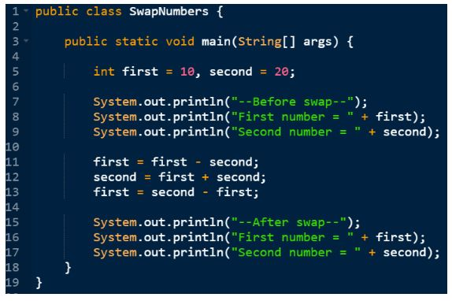

Lekcia 2: Dátové typy v Jave
V Jave musíme každej premennej vopred určiť, aký typ dát bude uchovávať. Java je staticky typovaný jazyk, čo zaisťuje bezpečnosť a stabilitu vášho kódu.
Primitívne dátové typy
Sú to základné typy dat Javy Tu sú tie najpoužívanejšie:
| Typ | Význam | Príklad |
|---|---|---|
| int | Celé čísla | 13 |
| double | Desatinné čísla | 14.27 |
| boolean | Logická hodnota (pravda/nepravda) | true |
| char | Jeden znak | 'A' |
| String | Textový reťazec | "Ahoj" |
Príklad deklarácie v kóde
Všimnite si, že za každým príkazom v Jave musíme napísať bodkočiarku:
